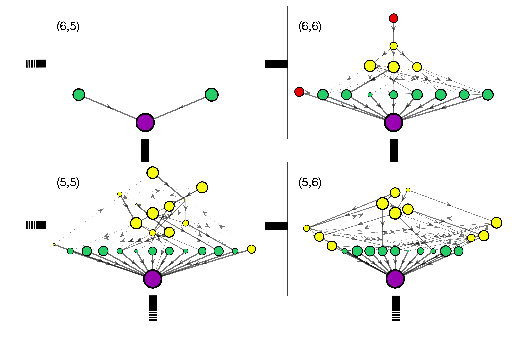
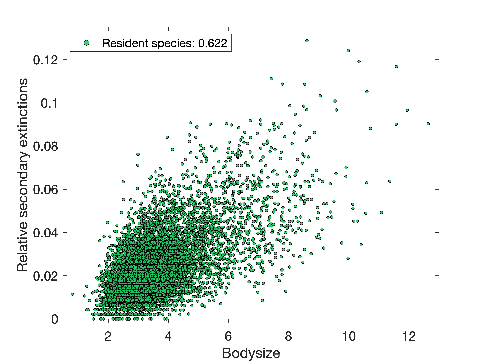
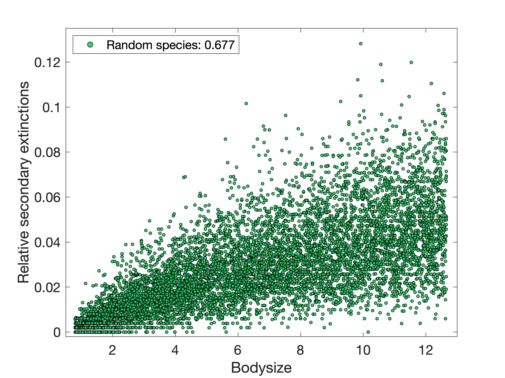
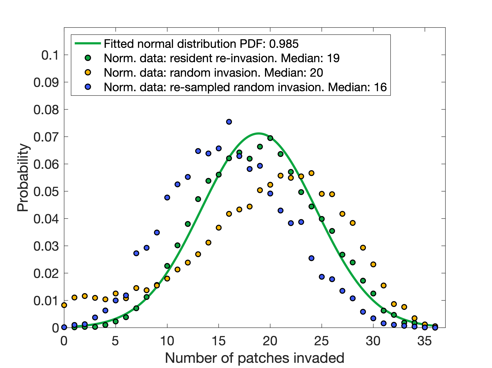
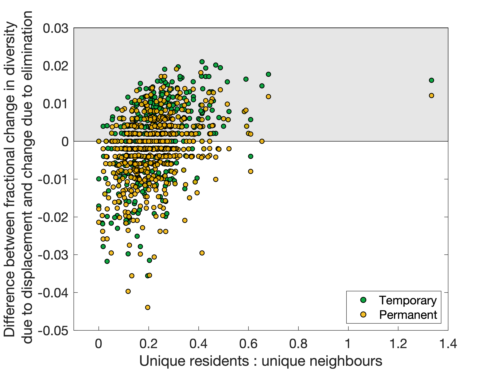
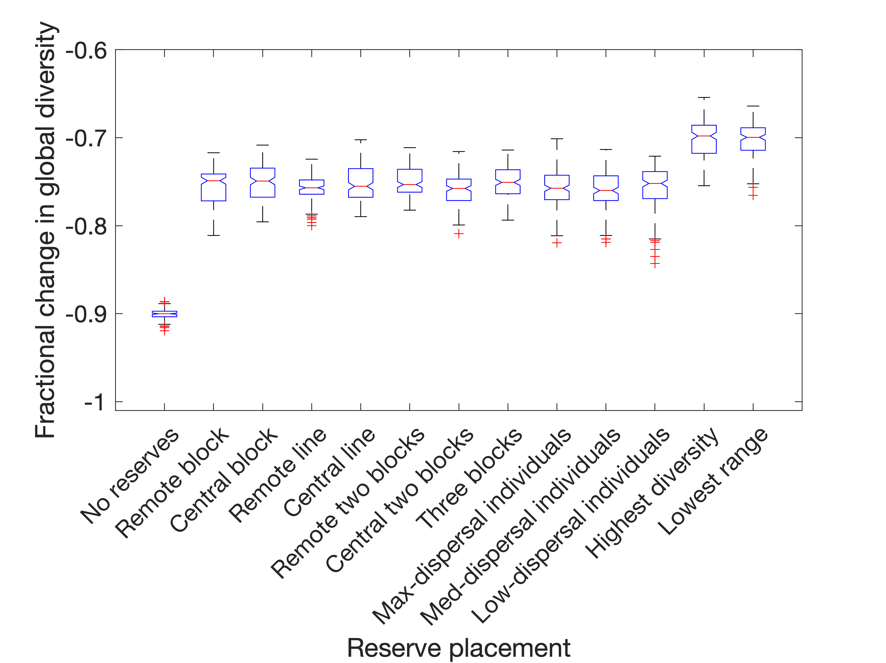
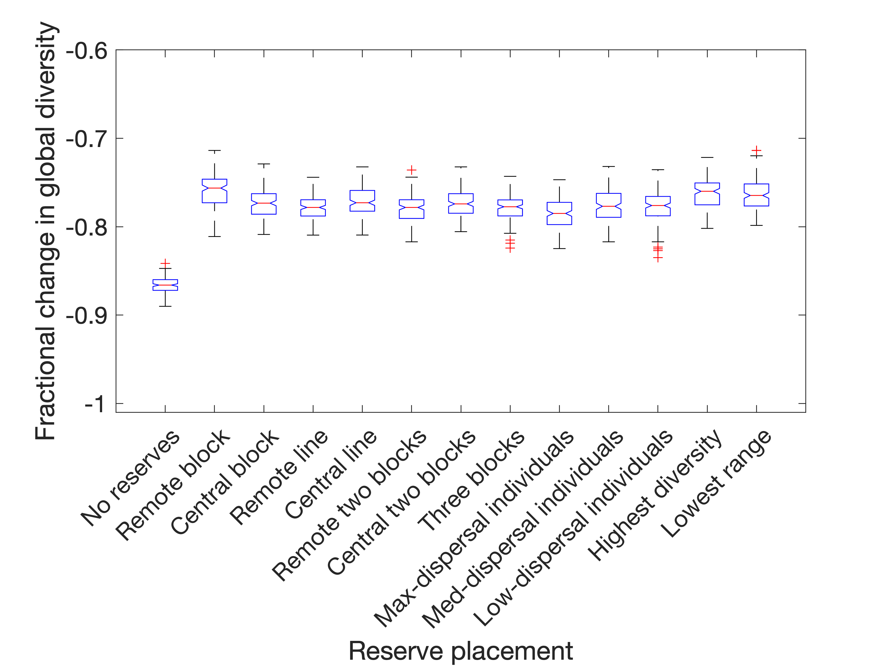

This project is the current culmination of previous work that begun during my postgraduate studies. We use an eco-evolutionary model to assemble a meta-community (that is, a set of trophic networks of species, themselves arranged on a spatial network) on a 6x6 spatial lattice. Each species is defined by a set of 10 (out of 500) discrete traits assigned to it, and a bodysize on a continuous scale. Together, these properties govern ecological mechanisms including what other species can be fed upon or that could predate on this species, how easily it can disperse to neighbouring patches, how much biomass is required for a new individual, and the level of interspecific competition experienced. For each of 10000 speciation events, a new species genetically similar to one that already exists in the meta-community is introduced and the ecological rules of the model determine dynamically whether it is able to invade and what the consequences of that are for the other residents. This generates a final ensemble of 450-550 species in an interlinked network of 36 foodwebs of varying size and complexity.
These ensembles have realistic foodweb structure and dependencies, and can be subjected to perturbation experiments to simulate how a real meta-foodweb might respond to species loss, invasion by alien species, or the loss of entire patches due to development, deforestation or climate change.
The first major experiment was to delete a given species from the meta-community,
and then re-introduce it with minimal population size to all 36 patches to
see if there were any properties that would indicate how likely the species was
to re-invade the meta-network and how many other species may go extinct as a
result.
Both turned out to have a moderate positive correlation with bodysize (Figure 2(a)),
and this continues to be the case if we randomly generate some new species
whose traits are not co-evolved and introduce them to the meta-community too (Figure 2(b)).
However, it ceases to matter if the species are trying to invade an empty meta-network and
establish as basal species, so this advantage to large bodysizes is presumably because the
lower trophic levels are highly competitive between specialists, and so the most promising
openings are at higher trophic levels for larger species. As they are slightly more mobile,
they can then more easily maintain satellite populations in additional patches that don't
directly support them. The combination of these advantages evidently outweighs the disadvantage
for larger animals that they require additional biomass to sustain these populations.
|

|

|
We also plotted the frequency distribution of the number of patches (out of the 36) that were successfully invaded. This turned out to be somewhat surprising, as it exactly fits a normal distribution centered at 18 patches (Figure 3, green).

As far as I can tell, there is no a priori reason to have expected this.
Any given species has a 50% probability of being able to feed on a given resource,
so in an empty, and totally-disconnected network the expected number of invasions would be
18. However in a connected network some of these invasions are satellite populations
from other patches where the species can actually prosper, and indeed when we repeat the experiment
with empty and connected meta-networks, an average species is able to re-invade 34-35 patches. So
we can be convinced that this pattern is not simply that the species are feeding on the resources
and ignoring (and being ignored by) the other species in each community. In the original
meta-communities (before this experiment) the maximum range of a species was only 6 patches,
and this included such satellite populations, so this remains rather surprising. Thus we conclude
that most species in the meta-communities could exist in many more patches (and maintain further
satellite populations) than they naturally do during the simulation, but only if they are given an
artificial helping hand to spread across the meta-network. Further, this intervention could
come at the cost of up to almost 13% of global biodiversity (at least 55 species, depending on the ensemble),
so this is worth bearing in mind for conservation applications: there is a theoretical danger in
forming corridors that allow species to easily move between habitats that were previously
far separated from their perspective.
To investigate further, we looked at the distribution of successful invasions in the meta-network for the
set of randomly-generated species mentioned above (Figure 2(b)). If their bodysize is drawn from a uniform
distribution from the lowest to the highest that were observed in the original co-evolved species set,
we find that they are both even more likely to invade most patches and now have a non-trivial chance of invading
few or zero patches (Figure 3, yellow). This is because a uniform distribution has introduced bias towards both more
high-bodysize species than were originally present (and who we know already have a greater probability of invasion),
and some very low-bodysize species who have extremely low probabilities of invasion. So if we then draw subsets
of this species set with random traits but with a bodysize distribution matching that of the original set of (7022)
species across the 15 ensembles, we recover a frequency distribution closer to the original but now showing a disadvantage
due to the lack of co-evolved traits (Figure 3, blue).
Next we looked at the deletion of invididual patches from the meta-network. Given that we have seen that spreading existing species across the space artificially can be very damaging, I am interested in knowing if we could determine for a given patch whether the consequences of displacing its populace to neighbouring patches would be more damaging than if the local population were simply lost. This comes down to an optimisation problem: given the loss of a local habitat, how do we manage the contents to minimse global loss to biodiversity?
There are a few properties of the patch that give some indication of this - mainly the average range of the species who constitute the local populations, but mainly the ratios of resident species (the diversity of the patch) to the number of species in neighbouring patches. This can be improved further by considering only the ratio of the number of unique resident species (who are not present in any neighbouring patch) to unique neighbouring species (who are not present in the patch to be perturbed), shown in Figure 4. Essentially, this is a question of who has more to lose? If the resident species of the patch are rare and numerous, displace them in the hopes that many will survive - while if they are common and/or few in number compared to many rare (and thus, vulnerable) species in the neighbouring communities, it may be pragmatic to let the residents perish rather than risk greater biodiversity loss by trying to save them.
|

|

|
In most cases, it is a reliable choice to dynamically select reserves to be the six patches with the greatest biodiversity, if it is possible to do so (this can be clearly seen in Figure 5(a)). If affected populations are eliminated, then it is also most effective to dynamically place reserves to cover the rarest species, choosing patches whose resident populations come from species with the lowest average range. If the disturbance is instead in the form of displacement of affected populations (Figure 5(b)), then both of these are still strong choices (although much less visibly so), but there also emerges a reasonable choice of static (i.e. predetermined) reserve placement, called "Remote block". This is a 3x2 block in the corner of the spatial meta-network, covering the patches in positions (1,1), (1,2), (1,3), (2,1), (2,2) and (2,3). This has the effect of minimising the number of paths directly from non-reserves into reserves, and completely isolates patches (1,1) and (1,2) since the network does not wrap around. Thus, a key consideration when placing nature reserves is not just to protect the residents from being destroyed or displaced - but shielding them from invasion by populations who have themselves been displaced by habitat destruction. This is also support for the general principle already known in reserve site-selection theory that large reserves are usually preferable to multiple smaller reserves.